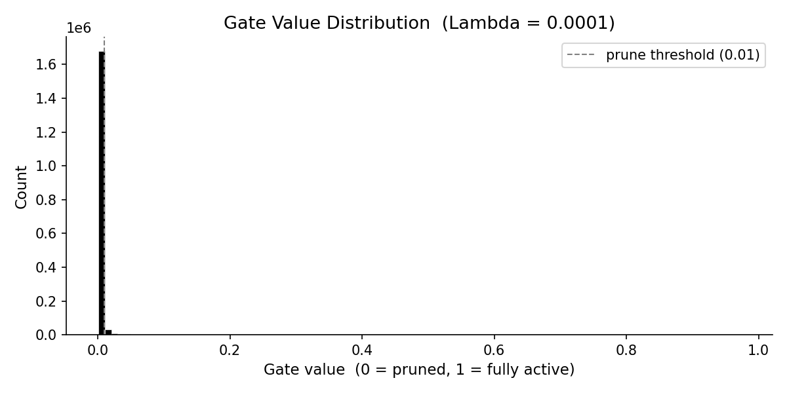

CIFAR-10 · Feed-forward with learnable gate sparsity · PyTorch
gate = σ(s) ∈ (0, 1)
The actual computation uses pruned_weight = w × gate.
A sparsity penalty λ · Σ gate is added to the cross-entropy
loss. Because the L1 gradient does not vanish as the gate approaches zero,
the optimiser keeps pushing unused gates all the way to 0
— permanently silencing that weight.
| Lambda (λ) | Test Accuracy | Sparsity | Accuracy bar |
|---|---|---|---|
|
Results will appear after training.
|
|||
One line per lambda value. Lower is better.

Spike near 0 = pruned gates · Cluster away from 0 = active gates
| Penalty | Gradient on score | Behaviour at gate→0 |
|---|---|---|
| L2 (Σ gate²) | −2 · gate · σ' | Gradient shrinks → rarely hits 0 exactly |
| L1 (Σ gate) | −σ'(score) | Constant pull → collapses to 0 |